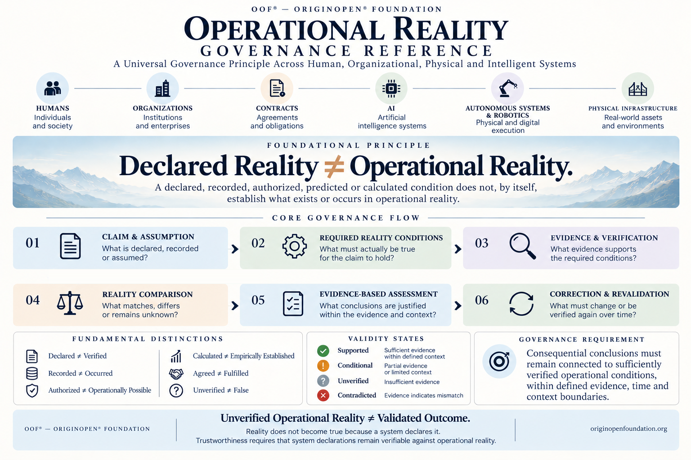

About the OOF® Operational Reality Governance Reference

OOF® — OriginOpen® Foundation
Reference Type: Universal Foundational Governance Reference
Version: 1.1 — Consolidated Methodological Edition
Status: Final Reference Text
Scope: Humans, Organizations, Contracts, Artificial Intelligence, Autonomous Systems, Robotics, Physical Infrastructure, Digital Systems and Institutional Processes
Foundational Principle: Declared Reality ≠ Operational Reality
Methodological Basis: Evidence-Bounded Operational Reality Validation
Website: https://originopenfoundation.org/
1. Introduction
The OOF® Operational Reality Governance Reference establishes a universal methodological foundation for examining the relationship between what is declared, assumed, recorded, authorized, calculated or predicted and what can be sufficiently established in operational reality.
Humans, organizations and intelligent systems continuously produce representations of reality. A person signs an agreement. An organization issues a certificate. An AI system produces an assessment. A robot receives an authorized instruction. A blockchain confirms a transaction. An institution declares that an obligation has been fulfilled.
Each event may establish a legitimate record, authorization, decision, legal status or technical result within its applicable domain. However, the existence of such a representation does not, by itself, establish every underlying condition that the representation assumes or describes.
Its purpose is not to reject formal records, institutional authority, mathematical reasoning or digital systems. Its purpose is to prevent representations from being mistaken for independently established operational conditions.
Reality does not become true because a system declares it.
2. Canonical Definition
The Operational Reality Governance Reference is a cross-domain governance methodology for identifying, evaluating and maintaining the relationship between represented conditions and evidence-supported operational conditions.
It provides a common methodological logic for examining claims, assumptions, required reality conditions, evidence, discrepancies, justified conclusions, correction and revalidation.
The reference applies across human, organizational, institutional, contractual, physical, digital and intelligent systems without imposing identical verification methods, legal responsibilities or operational obligations on every domain.
Its central requirement is that consequential conclusions remain appropriately connected to the conditions on which they depend, within defined evidence, time, context and intended-use boundaries.
A representation of reality must not be treated as independent proof of the reality it represents.
3. Foundational Principle
Declared Reality ≠ Operational Reality
A declared, recorded, authorized, predicted or calculated condition does not, by itself, establish what exists or occurs in operational reality.
Where a consequential conclusion depends on a real-world or domain-specific condition, that condition must be identified and evaluated against evidence appropriate to the claim, its intended use and the consequences of error. Where verification is insufficient, the conclusion must remain explicitly qualified rather than being presented as established fact.
Unverified Operational Reality ≠ Validated Outcome.
This distinction does not imply that an unverified claim is necessarily false. A conclusion may be factually correct even when the reasoning or evidence used to support it is insufficient. Likewise, an evidence-supported conclusion may require reassessment when new information becomes available.
Verification supports justified conclusions. It does not create reality or guarantee absolute certainty.
4. Why This Reference Is Necessary
Modern operational environments increasingly distribute claims, decisions, observations and execution across multiple people, institutions, organizations and technical systems. A single outcome may depend on contractual declarations, institutional records, sensor measurements, software configurations, human judgments, AI predictions and autonomous actions.
Each component may be valid within its own domain while failing to establish a necessary condition elsewhere in the operational chain.
- A contract exists, but the required performance has not been established.
- A certificate is authentic, but its scope does not cover the activity being assessed.
- An AI prediction is mathematically coherent, but its operational assumptions are unsupported.
- A digital transaction is validly recorded, but the represented external asset remains unverified.
- A robot receives an authorized instruction, but the operating environment has materially changed.
- A software deployment is formally approved, but the actual deployed configuration differs from the approved version.
These situations may result from incomplete evidence, outdated observations, incorrect assumptions, ambiguous definitions, common-source errors or changing operational conditions. The reference provides a consistent method for identifying and governing these differences.
5. Universal Application
Humans
Human statements, qualifications, commitments and decisions may be examined against actual performance, demonstrated capability and relevant evidence. A declaration of competence does not automatically establish competence under every operating condition.
Organizations
Organizational policies, procedures, certifications and compliance declarations may be compared with their actual implementation and observed effectiveness. Documented compliance processes do not automatically establish continuing operational compliance.
Contracts and Institutional Processes
Contracts and institutional decisions may create legally relevant rights, obligations or statuses. The reference distinguishes their existence and legal effect from the separate question of whether particular factual or operational conditions have been fulfilled. It does not independently determine legal validity or liability.
Artificial Intelligence
AI outputs, classifications, predictions and recommendations may be examined against their input conditions, assumptions, supporting evidence and applicable operating context. Computational coherence does not independently establish factual correctness.
Autonomous Systems and Robotics
Autonomous execution may be assessed against actual environmental conditions, technical capability, operational constraints and evidence of system behavior. Authorization and successful execution remain distinct questions.
Physical Infrastructure
Infrastructure records, inspection reports, certifications and monitoring data may be examined against the physical conditions they purport to establish. Historical verification does not automatically establish current condition.
Digital and Financial Systems
Digital records may establish events within their applicable technical systems. They do not automatically verify every external asset, entitlement, economic condition or real-world event represented by those records.
6. Core Governance Flow
The reference establishes six connected methodological stages.
Stage 01 — Claim & Assumption
Core Question: What is declared, recorded or assumed?
Identify the claim and its intended meaning, origin, scope, time reference and intended use. Materially distinct components of a compound claim must be separated when their individual evidentiary status can affect the overall conclusion. Implicit assumptions and dependencies must be made explicit where they materially influence the assessment.
Output: Defined claim, assumptions and claim-component record.
Stage 02 — Required Reality Conditions
Core Question: What must actually be true?
Identify the conditions necessary for the claim to hold. Distinguish necessary conditions, alternative conditions, contextual dependencies and conditions outside the verification scope. Identify whether the claim concerns a physical, legal, institutional, organizational, digital or other relevant state.
Output: Required conditions and dependency structure.
Stage 03 — Evidence & Verification
Core Question: What evidence supports the required conditions?
Identify and evaluate relevant evidence, including observations, measurements, authenticated records, technical logs, independent inspections, testimony, validated calculations or justified indirect inference. Evaluate provenance, authenticity, reliability, independence, uncertainty, temporal relevance and applicability.
Output: Evidence inventory, verification findings and limitations.
Stage 04 — Reality Comparison
Core Question: What matches, differs or remains unknown?
Compare represented conditions with the conditions supported by available evidence. Identify supported correspondence, material discrepancies, unresolved uncertainty, contradictory observations, incomplete evidence and changes in operational conditions.
Output: Reality comparison, discrepancies and unresolved conditions.
Stage 05 — Evidence-Based Assessment
Core Question: What conclusions are justified?
Determine the conclusions supported by available evidence within the defined purpose, time and context. Separate observations, inferences, assumptions and unresolved questions. Material contradictions must not be concealed by aggregate summaries.
Output: Qualified assessment, evidence-based validity state and documented limitations.
Stage 06 — Correction & Revalidation
Core Question: What must change or be verified again?
Identify corrections, limitations, escalation requirements and conditions triggering reassessment. Revalidation may be required when evidence changes, operating conditions evolve, system configurations are modified, assumptions are contradicted or intended use changes.
Output: Correction decision, revalidation requirements and continuity record.
7. Fundamental Distinctions
- Declared ≠ Verified — A declaration does not independently establish its factual content.
- Recorded ≠ Occurred — A record does not independently establish that the represented event occurred as described.
- Authorized ≠ Operationally Possible — Authorization does not independently establish feasibility under actual conditions.
- Calculated ≠ Empirically Established — Mathematical correctness does not independently establish the factual validity of underlying premises.
- Agreed ≠ Fulfilled — An agreement does not independently establish performance.
- Unverified ≠ False — Insufficient verification does not establish falsity.
These expressions distinguish evidentiary categories. They do not assert that the two sides necessarily conflict in every case.
8. Evidence-Based Validity States
The reference defines four primary assessment states. Each state applies to a specified claim within defined evidence, time, context and intended-use boundaries.
- Supported — Available evidence sufficiently supports the claim for the defined assessment purpose. This does not imply absolute certainty or unrestricted applicability.
- Conditional — The claim has qualified or context-dependent support, with material conditions or limitations that restrict the conclusion.
- Unverified — Available evidence is insufficient to establish the claim to the required level. This does not establish that the claim is false.
- Contradicted — Relevant evidence materially conflicts with the specified claim. The nature, reliability and scope of the contradiction must be documented.
Where evidence is materially contested, the conflict must remain visible. For compound claims, component-level states must be preserved alongside any overall assessment. Assessment states are evidence-relative findings, not universal declarations of absolute truth.
9. Evidence Sufficiency
Evidence sufficiency is purpose-dependent. The reference does not impose a universal evidence quantity, confidence threshold or verification technique across all domains.
Evidence requirements must reflect the specific claim, intended use, consequences of error, relevant operational conditions, reliability and independence of evidence, applicable domain-specific requirements, and temporal and contextual limitations.
Evidence sufficient for preliminary research may be insufficient for a safety-critical authorization. Evidence sufficiency must be evaluated against the decision the evidence is intended to support.
10. Temporal and Contextual Integrity
Operational conditions may change over time. The reference distinguishes the time a claim was made, the time a condition existed, the time evidence was collected, the time evidence became available and the time an assessment was performed.
Historical truth, contemporaneously available knowledge and retrospective verification must remain distinguishable. Evidence obtained later may support a retrospective assessment, but must not be presented as though it was available to the original decision-maker at the historical decision point.
A conclusion supported in one context must not automatically be generalized to another. Verification remains bounded by the conditions, time and context actually examined.
11. Additional Methodological Safeguards
- Temporal Knowledge Separation. Historical conditions, contemporaneous knowledge and retrospective findings must be evaluated separately.
- Indirect Evidence Validity. Indirect evidence and inference may support a conclusion where assumptions, reliability, limitations and uncertainty are explicit.
- Evidence Independence. Multiple records originating from a common source must not automatically be treated as independent corroboration.
- Reality Domain Separation. Legal, institutional, digital, physical and operational states must be evaluated using evidence appropriate to the specific claim.
- System-Level Verification. Verification of individual components does not automatically establish the validity of their combined operation.
- Action Under Uncertainty. Insufficient verification does not independently determine whether action is prohibited, required or permissible.
- Composite Claim Decomposition. Materially distinct claim components must remain separately assessable, including their dependencies, contradictions and unresolved conditions.
- Circular Evidence Control. A system output must not be treated as independent verification of itself.
- Common-Mode Error Control. Apparently independent measurements may share systematic errors arising from common calibration, models, assumptions or infrastructure.
- Observation-Induced Behavior. Verification conditions may influence the behavior being observed and results from controlled inspection must not automatically be generalized to ordinary operation.
- Population-to-Individual Inference Boundary. Statistical conclusions about populations must not automatically be treated as proof of individual conditions.
12. Compound Claims and Aggregated Conclusions
A compound claim may contain several individually assessable conditions. For example, a system may be described as authorized, technically ready and safe to operate. These are distinct conditions.
A valid authorization does not independently establish technical readiness, and technical readiness does not independently establish operational safety.
- Identify the component claims.
- Determine their logical relationships.
- Evaluate their evidence separately.
- Preserve material contradictions and unresolved conditions.
- Establish an overall conclusion only where the logical and evidentiary basis supports it.
Where all components are necessary, failure of one necessary condition prevents the complete conjunction from being established. Aggregate validity must not conceal component-level invalidity.
13. Verification Under Uncertainty
Operational reality may be only partially observable. Direct observation may be impossible, unsafe, unavailable or disproportionate to the decision being made. In such cases, appropriately validated indirect evidence, statistical inference, models or corroborated observations may be used.
The assessment must disclose their assumptions and limitations. The reference does not require impossible certainty, nor does it independently prohibit all action under uncertainty. Where consequential action must occur before complete verification is possible, the applicable decision framework must govern whether and how action proceeds.
Uncertainty may be managed, but it must not be misrepresented as verified certainty.
14. Relationship to Authority, Responsibility and Accountability
Operational reality verification is distinct from authority, responsibility and accountability. An actor may be authorized to act without possessing the operational capability required for successful execution. An actor may have an obligation without sufficient control over every relevant condition. An action may be successfully executed without establishing that every related obligation was fulfilled.
The reference examines the evidentiary relationship between represented and actual conditions. It does not independently determine who is legally responsible, who possesses authority or who is accountable for an outcome. These questions require their respective governance frameworks.
15. Cross-Architecture Compatibility
The reference is intended as a reusable methodological foundation across OOF® governance architectures and engines.
- VFM®: distinguishing recorded or asserted value from evidence of underlying economic conditions.
- VEGA™: examining whether declared operational benefits, efficiency or return on investment correspond to evidenced outcomes.
- SLGA™: examining whether declared software lifecycle states correspond to actual deployment and operating conditions.
- ASGA™: examining assumptions, observed conditions and evidence supporting autonomous execution.
- AIG®: examining factual premises and operational-context boundaries relevant to AI behavioral governance.
- GIE™: supporting evidence-grounded assessments and explicit representation of uncertainty.
These examples describe methodological compatibility, not completed technical integrations. The reference does not create an additional OOF® architecture.
16. Governance Outputs
A documented application of the reference may produce claim and assumption records; component-claim and dependency structures; required reality conditions; evidence inventories and provenance; verification findings and limitations; reality comparison records; material discrepancies; evidence-based assessment states; unresolved evidence conflicts; correction and escalation requirements; revalidation triggers; temporal and contextual boundaries; and applicable methodological references.
The required documentation depth should be proportional to the intended use and consequences of error.
17. Methodological Stress Testing
The reference underwent 35 analytical model-based stress-test scenarios during its methodological development. The scenarios examined contractual performance, certification scope, AI predictions, autonomous execution, blockchain records, historical evidence, incomplete observability, contradictory evidence, temporal change, manipulated evidence, circular verification, shared measurement errors, compound claims and other cross-domain conditions.
The initial assessments identified conditional outcomes and one significant ambiguity involving compound claims. The methodology was subsequently refined through eleven safeguards. Analytical reassessment indicated that the identified scenarios could be addressed without changing the foundational principle or six-stage governance flow.
These tests were conceptual and methodological. They do not constitute independent empirical validation, regulatory approval, certification or proof of effectiveness in every operational environment. Future implementation-specific testing remains necessary.
18. Methodological Boundaries
The reference must not be interpreted as a guarantee of complete knowledge of reality; a universal legal or regulatory compliance determination; an automatic certification mechanism; proof that every unverified claim is false; a substitute for scientific, engineering or domain-specific validation; an automatic determination of fault or legal liability; a universal numerical truth-scoring system; a guarantee that sufficient evidence can always be obtained; or a claim that humans, organizations and autonomous systems possess identical legal status.
The reference establishes a method for governing the relationship between claims, evidence and operational conditions. It does not eliminate uncertainty or replace the competent authorities and domain-specific standards governing consequential decisions.
19. Relationship to the Core Reference View
The OOF® Operational Reality Governance Reference — Core Reference View provides the concise visual representation of this methodology. It communicates the universal scope, foundational principle, six-stage governance flow, fundamental distinctions, four evidence-based validity states and governance requirement.
This document provides the methodological definitions, safeguards, limitations and interpretation required to apply that visual reference responsibly. The visual representation and this document form complementary parts of the same reference.
The visual reference remains Version 1.0. This About document is Version 1.1, reflecting the consolidated methodological safeguards.
20. Foundational Governance Requirement
Consequential conclusions must remain connected to sufficiently verified operational conditions, within defined evidence, time and context boundaries.
This requirement does not demand absolute certainty. It requires that the evidentiary basis, relevant assumptions, unresolved uncertainty and limitations of a conclusion remain identifiable and appropriately represented.
A formal declaration, authentic record, technically correct calculation or authorized process must not be treated as proof of conditions that it does not independently establish. Where verification is insufficient, the resulting conclusion must remain appropriately qualified.
21. Foundational Equations
Declared Reality ≠ Operational Reality.
Recorded State ≠ Verified State.
Authorized Action ≠ Operationally Feasible Action.
Calculated Result ≠ Empirically Established Result.
Agreed Obligation ≠ Fulfilled Obligation.
Component Verification ≠ System Verification.
Evidence Agreement ≠ Evidence Independence.
Unverified ≠ False.
Unverified Operational Reality ≠ Validated Outcome.
These equations express methodological distinctions, not automatic factual contradictions.
22. Closing Statement
Reality does not become true because a person, organization, institution, algorithm or autonomous system declares it. A contract may be legally valid. A certificate may be authentic. A calculation may be mathematically correct. An authorization may be legitimate. A transaction may be technically confirmed.
Each establishes only what its applicable evidence and governing conditions support. The conditions represented by those instruments may require separate verification.
Trustworthy governance requires that consequential representations remain open to appropriate verification, contradiction, correction and reassessment. Trustworthiness requires that system declarations remain verifiable against operational reality.
The OOF® Operational Reality Governance Reference provides a common methodological foundation for maintaining this distinction across human, organizational, physical, digital and intelligent systems.
One operational reality principle. Different systems. Evidence-bounded conclusions.
OOF® — OriginOpen® Foundation
Operational Reality Governance Reference — About Document v1.1
Consolidated Methodological Edition